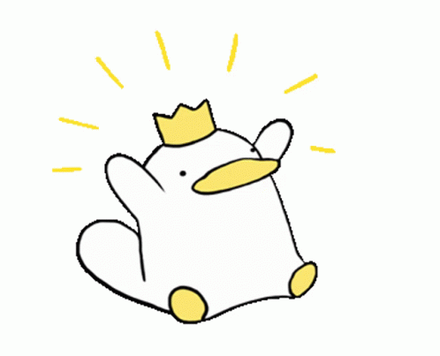

You can call me "Pang!"

Name : Chatchadaporn Saetang
Age : 18
B-Day : 9 sep 2005
Favorite things : Food,Sky,Pets
Hobby : Listening to music,Watch some movie and sleep
Motto : There is nothing better than relaxation.
GIVE 3 WORDS FOR myself
1.Patient
2.Challenge
3.Duck ?
🦆 I'm a Duck !
> why do I call myself is a DUCK ?
> because in Thai we call a person who can do many things but not an expert is a DUCK.
so I'M A DUCK.🤣
